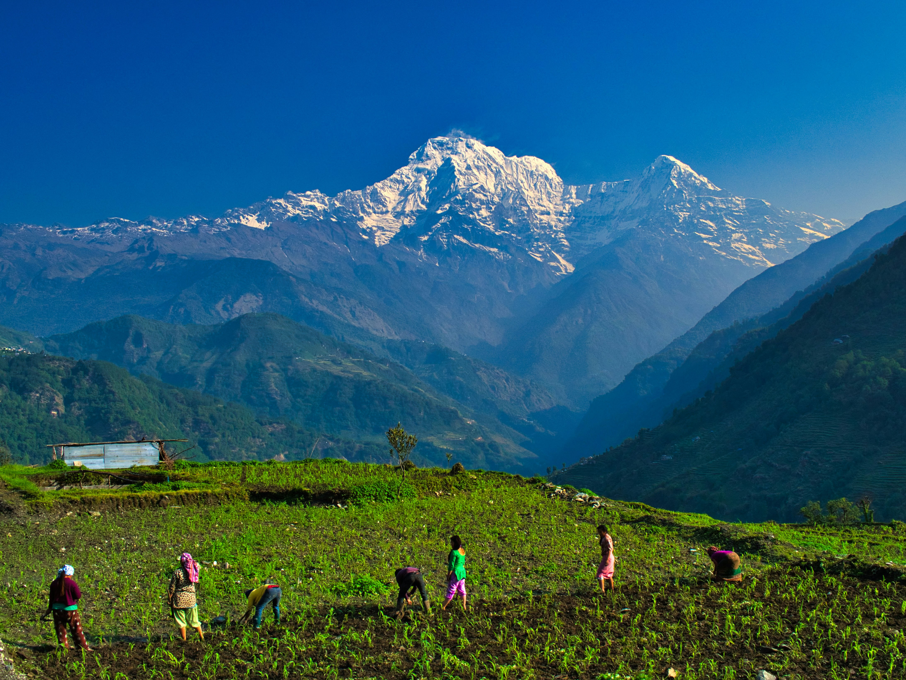

CLIMATE & ENVIRONMENT
New research reveals changes in mountain ecosystems
Researchers have identified significant changes across high-altitude ecosystems...
12 AUGUST 2026
Read research →GEOSCIENCE
FEATURED RESEARCH

RESEARCH